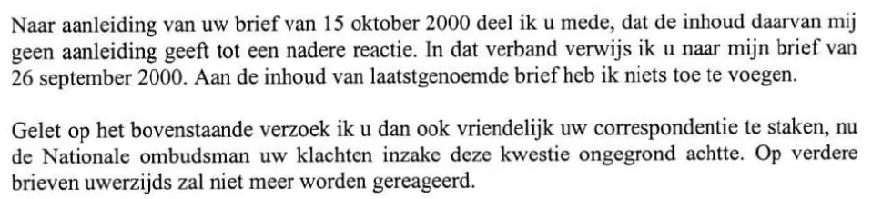

Bewijsstuk · Brief
Ministerie van Defensie aan Giltay, 30 oktober 2000
De passage
“Naar aanleiding van uw brief van 15 oktober 2000 deel ik u mede, dat de inhoud daarvan mij geen aanleiding geeft tot een nadere reactie. In dat verband verwijs ik u naar mijn brief van 26 september 2000. Aan de inhoud van laatstgenoemde brief heb ik niets toe te voegen. Gelet op het bovenstaande verzoek ik u dan ook vriendelijk uw correspondentie te staken, nu de Nationale ombudsman uw klachten inzake deze kwestie ongegrond achtte. Op verdere brieven uwerzijds zal niet meer worden gereageerd.” Pagina 1, de twee alinea’s die de tekst van de brief vormen. Ze volgen direct op elkaar en zijn hier met één spatie samengevoegd. De brief schrijft ‘Nationale ombudsman’ met een kleine o, zoals het instituut zelf doet.

Waarom dit document telt
In deze brief van 30 oktober 2000, veertien jaar voordat het boek verscheen, liet het Ministerie van Defensie Giltay weten dat zijn brief geen aanleiding gaf tot een nadere reactie, vroeg het hem zijn correspondentie te staken, en sloot het af met de mededeling dat op verdere brieven van hem niet meer zou worden gereageerd. Als reden voerde het ministerie aan dat de Nationale ombudsman zijn klachten in deze kwestie ongegrond had geacht. Het essay stelt dat de in het boek genoemde ministeries nooit inhoudelijk op de onthullingen hebben gereageerd, op geen enkel niveau, en dat dit al vóór de publicatie begon, met deze brief als vroegste voorbeeld.
Herkomst
- Document
- Brief, één pagina
- Van
- Ministerie van Defensie, Postbus 20701, 2500 ES ’s-Gravenhage
- Aan
- E.F. Giltay
- Datum
- 30 oktober 2000
- Kenmerk
- CNO 99/001 en 2000004399
- Onderwerp
- ‘Rehabilitatie-/ rectificatieverzoek’
- Verwijzingen
- Giltays brief van 15 oktober 2000, en de eigen eerdere brief van het ministerie van 26 september 2000, waaraan het niets zegt toe te voegen
- Ondertekend
- Voor de minister van Defensie, de secretaris-generaal, getekend door de plaatsvervangend secretaris-generaal, drs. H.H. Hulshof; de handtekening zelf is in de pdf zwartgelakt
- Mandaat
- De brief geldt als brief van de minister van Defensie, Frank de Grave, die er de verantwoordelijkheid voor draagt. Het citaat in de stemmensectie wordt daarom aan hem toegeschreven.
- Taal
- Nederlands
- Zie ook
- Rapport 1999/507 van de Nationale ombudsman, 17 december 1999
Aangehaald in:
- het essay ‘Het verbod viel, het boek bleef overeind’ in het hoofdstuk (7) ‘Nooit een inhoudelijk antwoord’
- de stemmensectie.
Document: https://
Laatst gewijzigd 13 september 2026, geraadpleegd 3 oktober 2026.

Deze pagina is een bewijsstuk bij het boek De doofpotgeneraal van Edwin Giltay en de bijbehorende website.